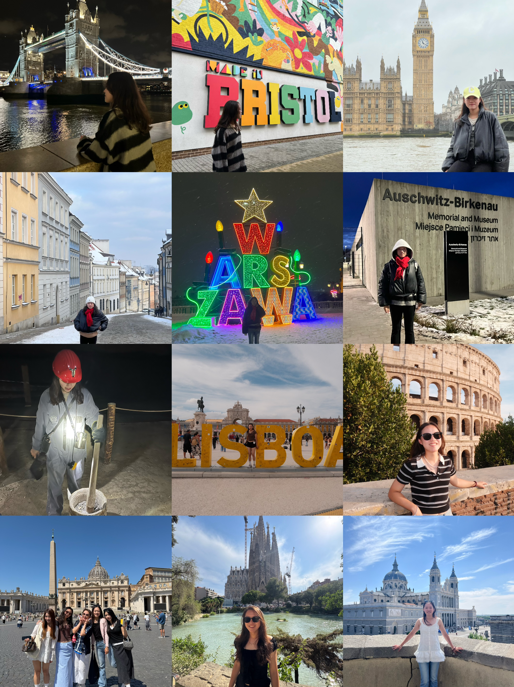

My Travel Experiences
During school breaks, I often travel with my family or friends to explore new places, so I have visited many different countries and cities over the years. In Asia, I have visited Japan nine times and explored four different cities. I have also visited South Korea three times and explored two cities, as well as traveled to the Philippines.
Since moving to the United States for college, I have also had opportunities to visit different cities, including New York City, Miami, Los Angeles, San Francisco, and Chicago. I have also traveled to Canada.
I also traveled to Europe and visited several countries, including the United Kingdom, Poland, Italy, Spain, and Portugal. Each country or city has its own unique lifestyle, culture, food, architecture, and attractions. I think this is what makes traveling so exciting because there is always something new to discover. Through these trips, I have made many great memories.
Even though I have visited some countries and cities many times, I can still have completely different experiences each time. There are always new places to explore, different foods to try, and things I did not notice during my previous visits. This is why I still want to visit some of these places again.
Places I've Visited
- Asia: Japan, South Korea, Philippines
- North America: United States, Canada
- Europe: United Kingdom, Poland, Italy, Spain, Portugal
My Travel Photos
Asia
North America

Europe
Travel Visualization - Places I've Visited by Continent
This bar chart shows the number of different cities I have visited on each continent. North America has the highest number of cities I have visited, followed by Europe and Asia. I have not visited Africa, South America, Antarctica, or Oceania yet.